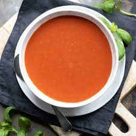

Homemade Tomato Soup

This is a classic Homemade Tomato Soup that anyone can make!
Serves 8 with a yield of one gallon. Prep time 30 min, Cook time 1 hr 55min.
Ingredients
- 6 lbs tomatoes, halved, or more to taste
- 8 cloves unpeeled garlic, or more to taste
- 3 tablespoons olive oil
- 3 tablespoons coarse salt, or to taste
- 2 tablespoons butter
- 1 medium onion, diced
- 2 teaspoons white sugar, or more to taste
- 1 teaspoon dried oregano
- 4 cups vegetable stock
- 1/2 cup heavy cream (optional)
- salt and ground black pepper to taste
Steps
- Preheat the oven to 350 degrees F
- Arrange tomatoes cut-side up on 1 or 2 large 4-sided baking pans. Place unpeeled garlic on top of tomatoes. Drizzle with olive oil and sprinkle with coarse salt
- Roast in the preheated oven for 1 hour. Remove from the oven and let cool in the pan
- Meanwhile, heat butter in a large stockpot over medium-low heat. Cook onion, sugar, and oregano in the hot butter until onion is softened, 5 to 7 minutes. Peel roasted garlic and add to the pot. Add roasted tomatoes and their juices. Pour in vegetable stock. Cover and let soup simmer for 20 minutes.
- Puree soup using an electric blender working in batches, using extreme caution with hot liquids; vent the lid a bit and cover with a old towel. Force puree through a mesh strainer into another pot, discarding solids.
- Stir in heavy cream and season soup with salt and pepper.
Back Home